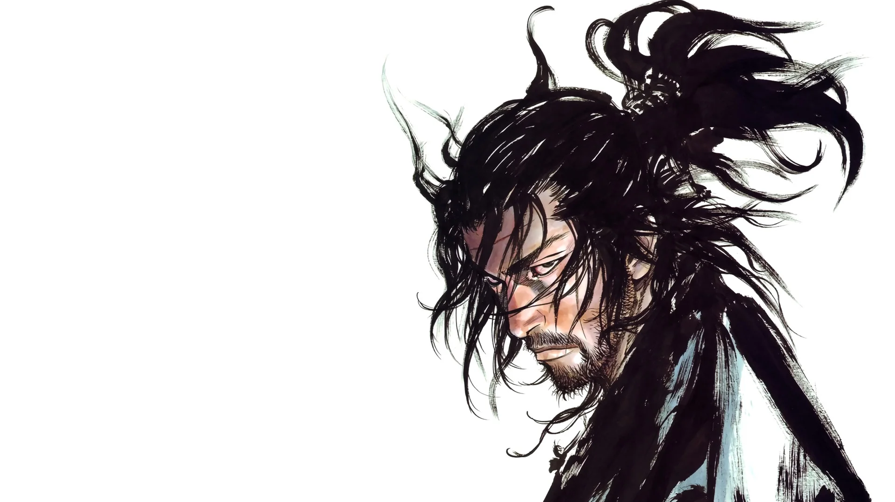

« Vagabond », manga culte de Takehiko Inoue, est une œuvre d’art qui transcende les limites du genre. Inspiré de la vie du légendaire samouraï Miyamoto Musashi, il explore la quête de sens, de puissance et de paix intérieure dans un Japon aussi sauvage que poétique.
Le dessin est d’une beauté saisissante. Chaque planche semble gravée à l’encre et au souffle, rendant hommage à la discipline et à la solitude du guerrier. Les combats, d’une intensité rare, allient réalisme brutal et élégance graphique.
Ce manga se distingue par sa profondeur psychologique. Musashi n’est pas un héros parfait, mais un homme brisé en quête d’équilibre. À travers ses errances, Inoue interroge la notion même de force : est-elle physique, mentale ou spirituelle ?
« Vagabond » ne se lit pas seulement ; il se médite. Chaque silence, chaque trait de pinceau raconte un fragment d’humanité. C’est un voyage où la violence sert à révéler la fragilité de l’âme.
